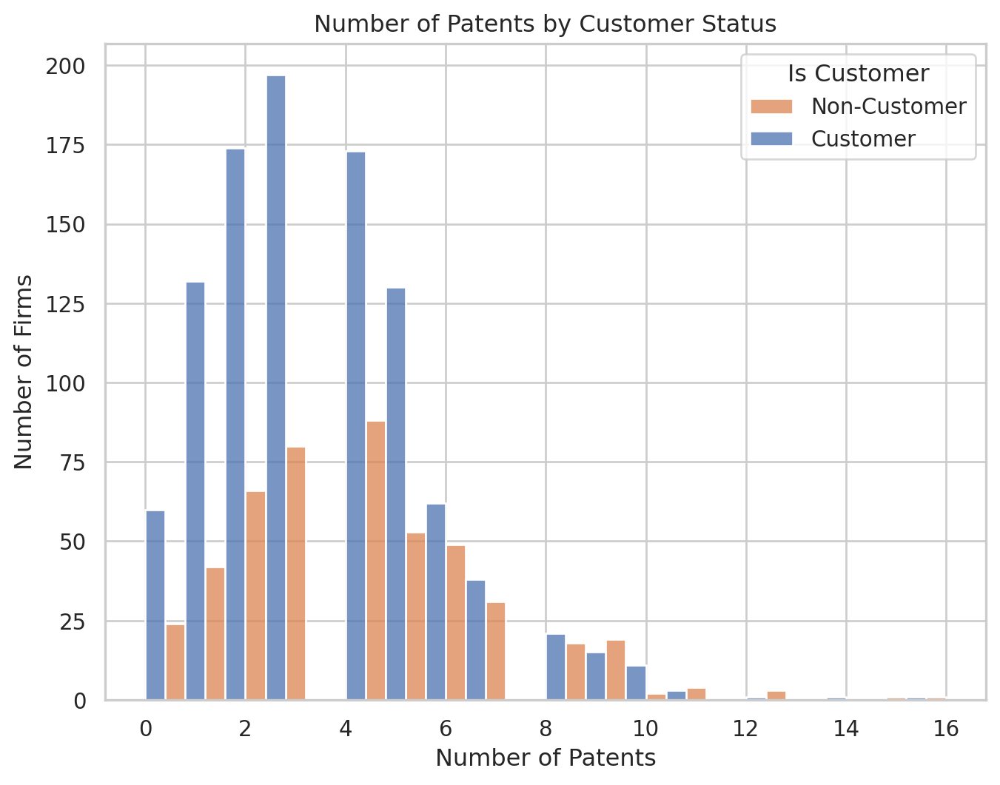
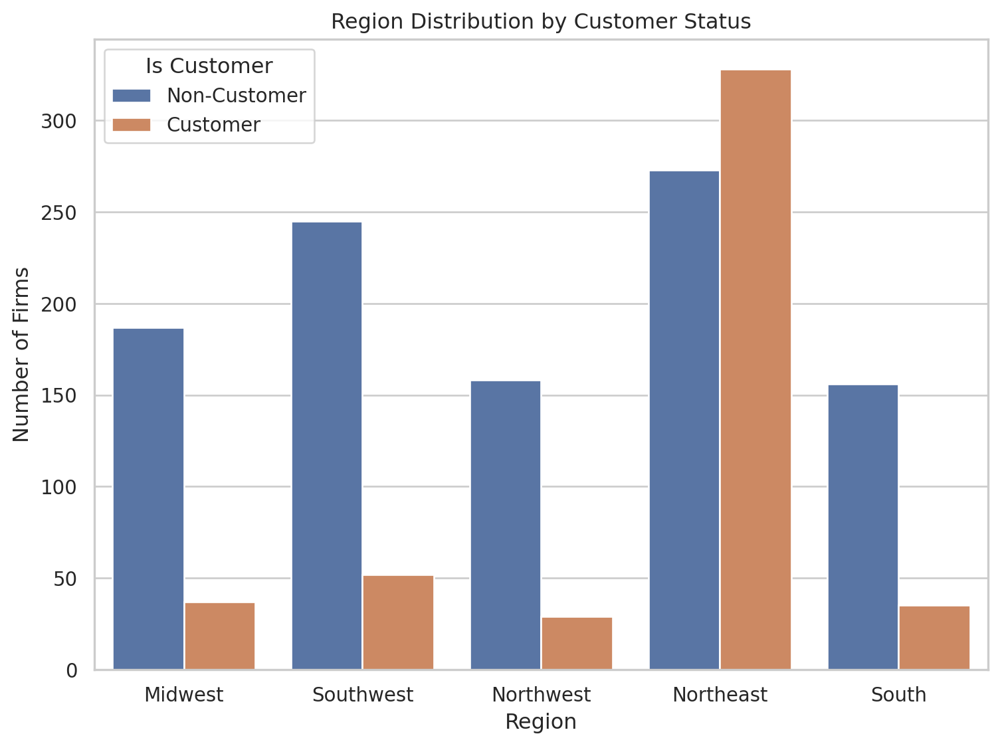
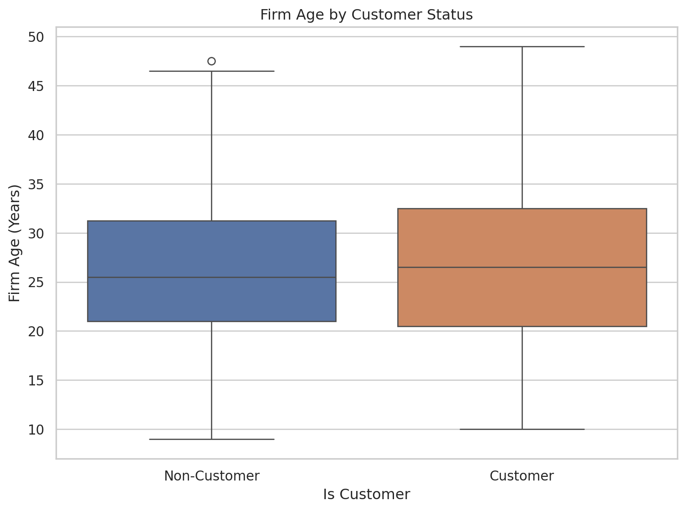
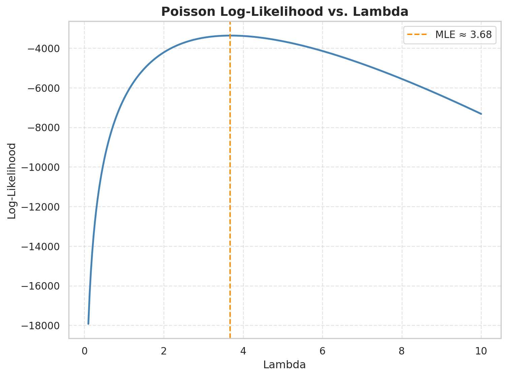
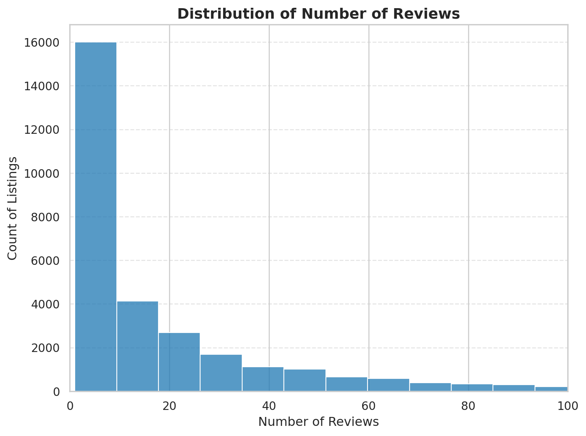
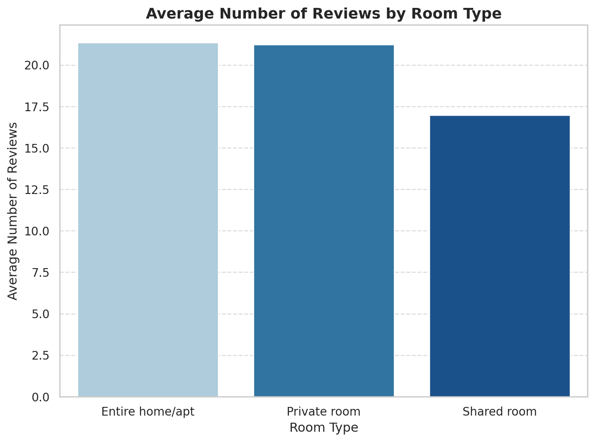
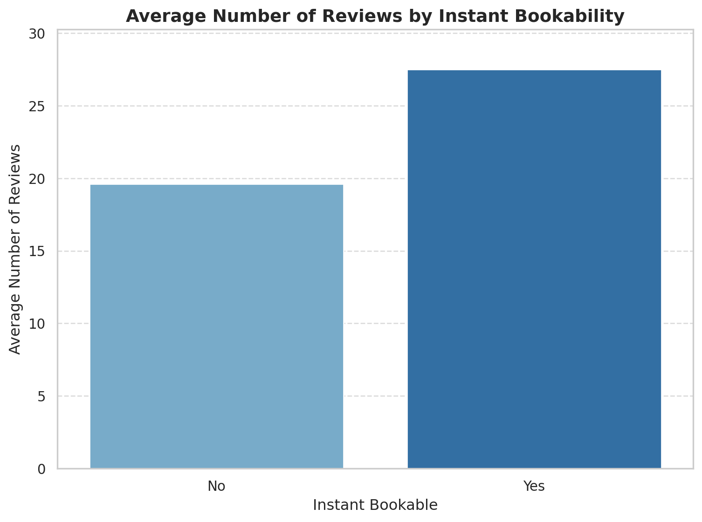
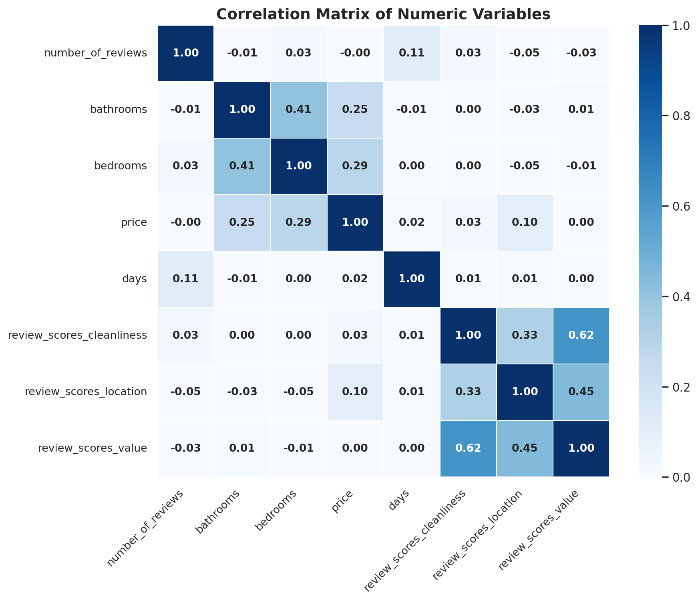

Code
import pandas as pd
df = pd.read_csv("blueprinty.csv")
df.head()| patents | region | age | iscustomer | |
|---|---|---|---|---|
| 0 | 0 | Midwest | 32.5 | 0 |
| 1 | 3 | Southwest | 37.5 | 0 |
| 2 | 4 | Northwest | 27.0 | 1 |
| 3 | 3 | Northeast | 24.5 | 0 |
| 4 | 3 | Southwest | 37.0 | 0 |
Savitha Murali
May 7, 2025
Blueprinty is a small firm that makes software for developing blueprints specifically for submitting patent applications to the US patent office. Their marketing team would like to make the claim that patent applicants using Blueprinty’s software are more successful in getting their patent applications approved. Ideal data to study such an effect might include the success rate of patent applications before using Blueprinty’s software and after using it. Unfortunately, such data is not available.
However, Blueprinty has collected data on 1,500 mature (non-startup) engineering firms. The data include each firm’s number of patents awarded over the last 5 years, regional location, age since incorporation, and whether or not the firm uses Blueprinty’s software. The marketing team would like to use this data to make the claim that firms using Blueprinty’s software are more successful in getting their patent applications approved.
import matplotlib.pyplot as plt
import seaborn as sns
sns.set(style="whitegrid")
plt.figure(figsize=(8, 6))
sns.histplot(data=df, x="patents", hue="iscustomer", bins=20, multiple="dodge")
plt.title("Number of Patents by Customer Status")
plt.xlabel("Number of Patents")
plt.ylabel("Number of Firms")
plt.legend(title="Is Customer", labels=["Non-Customer", "Customer"])
plt.show()
Firms that are customers of Blueprinty tend to have more patents on average (≈ 4.13) than non-customers (≈ 3.47). The histogram shows that customer firms are more concentrated at higher patent counts, suggesting a potential positive relationship between using Blueprinty and patent success. However, this pattern may also be influenced by other factors, such as region or firm age, which need to be explored further.
Blueprinty customers are not selected at random. It may be important to account for systematic differences in the age and regional location of customers vs non-customers.
import seaborn as sns
import matplotlib.pyplot as plt
palette = {0: "#4C72B0", 1: "#DD8452"}
plt.figure(figsize=(8, 6))
sns.countplot(data=df, x="region", hue="iscustomer", palette=palette)
plt.title("Region Distribution by Customer Status")
plt.xlabel("Region")
plt.ylabel("Number of Firms")
plt.legend(title="Is Customer", labels=["Non-Customer", "Customer"])
plt.tight_layout()
plt.show()
# Map customer status labels
df["Customer Status"] = df["iscustomer"].map({0: "Non-Customer", 1: "Customer"})
# Define matching palette
palette = {"Non-Customer": "#4C72B0", "Customer": "#DD8452"}
# Plot
plt.figure(figsize=(8, 6))
sns.boxplot(data=df, x="Customer Status", y="age", hue="Customer Status", palette=palette, legend=False)
plt.title("Firm Age by Customer Status")
plt.xlabel("Is Customer")
plt.ylabel("Firm Age (Years)")
plt.tight_layout()
plt.show()
The regional distribution of firms is not uniform between customers and non-customers. Some regions (e.g., Northeast) have a higher concentration of Blueprinty customers. This suggests that region may confound the relationship between software usage and patent outcomes.
Regarding age, customers are slightly older on average (~26.9 years) than non-customers (~26.1 years), though the difference is modest. It is still important to consider firm age in the analysis to avoid biased conclusions.
Since our outcome variable of interest can only be small integer values per a set unit of time, we can use a Poisson density to model the number of patents awarded to each engineering firm over the last 5 years. We start by estimating a simple Poisson model via Maximum Likelihood.
Probability Mass Function
The probability mass function for a single observation from a Poisson distribution is:
\[ f(Y_i \mid \lambda) = \frac{e^{-\lambda} \lambda^{Y_i}}{Y_i!} \]
Likelihood Function
Assuming the observations are independent, the likelihood function for the entire dataset is:
\[ L(\lambda; Y_1, \ldots, Y_n) = \prod_{i=1}^{n} \frac{e^{-\lambda} \lambda^{Y_i}}{Y_i!} \]
This can be rewritten as:
\[ L(\lambda) = e^{-n\lambda} \cdot \lambda^{\sum_{i=1}^{n} Y_i} \cdot \prod_{i=1}^{n} \frac{1}{Y_i!} \]
Log-Likelihood Function
Taking the natural logarithm of the likelihood gives:
\[ \log L(\lambda) = -n\lambda + \left( \sum_{i=1}^{n} Y_i \right) \log \lambda - \sum_{i=1}^{n} \log(Y_i!) \]
This log-likelihood will be used to estimate ( ) via Maximum Likelihood Estimation (MLE).
We visualize the Poisson log-likelihood as a function of ( ), where the maximum corresponds to the MLE.
import numpy as np
import matplotlib.pyplot as plt
from scipy.special import gammaln
# Example data: simulated Poisson observations
Y_sample = df["patents"].values
# Range of lambda values to plot
lambdas = np.linspace(0.1, 10, 300)
log_likelihoods = [poisson_loglikelihood(l, Y_sample) for l in lambdas]
# Find MLE visually
lambda_mle = lambdas[np.argmax(log_likelihoods)]
# Plot
plt.figure(figsize=(8, 6))
plt.plot(lambdas, log_likelihoods, linewidth=2, color="steelblue")
plt.axvline(lambda_mle, color="darkorange", linestyle="--", label=f"MLE ≈ {lambda_mle:.2f}")
plt.title("Poisson Log-Likelihood vs. Lambda", fontsize=14, weight="bold")
plt.xlabel("Lambda", fontsize=12)
plt.ylabel("Log-Likelihood", fontsize=12)
plt.grid(True, linestyle="--", alpha=0.5)
plt.legend()
plt.tight_layout()
plt.show()
Suppose ( Y_1, Y_2, , Y_n () ), where the probability mass function is:
\[ f(Y_i \mid \lambda) = \frac{e^{-\lambda} \lambda^{Y_i}}{Y_i!} \]
Step 1: Log-Likelihood Function
The log-likelihood of the entire sample is:
\[ \log L(\lambda) = \sum_{i=1}^{n} \left( -\lambda + Y_i \log \lambda - \log Y_i! \right) \]
We can simplify this (since ( Y_i! ) does not depend on ( )):
\[ \log L(\lambda) = -n\lambda + \left( \sum_{i=1}^{n} Y_i \right) \log \lambda + \text{constant} \]
Step 2: First Derivative
Take the derivative with respect to ( ):
\[ \frac{d}{d\lambda} \log L(\lambda) = -n + \frac{1}{\lambda} \sum_{i=1}^{n} Y_i \]
Step 3: Set Derivative to Zero
\[ -n + \frac{1}{\lambda} \sum_{i=1}^{n} Y_i = 0 \]
Solving for ( ):
\[ \lambda = \frac{1}{n} \sum_{i=1}^{n} Y_i = \bar{Y} \]
The maximum likelihood estimator (MLE) of ( ) is the sample mean:
\[ \hat{\lambda}_{\text{MLE}} = \bar{Y} \]
This result makes intuitive sense: in a Poisson distribution, the mean and variance are both equal to ( ), so the best estimate of ( ) from data is the observed average.
scipy.optimizeWe use numerical optimization to find the value of ( ) that maximizes the Poisson log-likelihood.
The maximum likelihood estimate (MLE) of ( ) is approximately equal to the sample mean of the number of patents, which is expected for a Poisson distribution.
Next, we extend our simple Poisson model to a Poisson Regression Model such that \(Y_i = \text{Poisson}(\lambda_i)\) where \(\lambda_i = \exp(X_i'\beta)\). The interpretation is that the success rate of patent awards is not constant across all firms (\(\lambda\)) but rather is a function of firm characteristics \(X_i\). Specifically, we will use the covariates age, age squared, region, and whether the firm is a customer of Blueprinty.
scipy.optimizeimport pandas as pd
import numpy as np
from scipy import optimize
from scipy.special import gammaln
# Load the data
df = pd.read_csv("blueprinty.csv")
# Create age squared
df["age2"] = df["age"] ** 2
# Create region dummies (drop one to avoid multicollinearity)
region_dummies = pd.get_dummies(df["region"], drop_first=True)
# Construct design matrix
X = pd.concat([
pd.Series(1, index=df.index, name="intercept"),
df["age"],
df["age2"],
region_dummies,
df["iscustomer"]
], axis=1)
Y = df["patents"].values
X_matrix = X.values
def poisson_loglike(beta, X, Y):
beta = np.atleast_1d(np.asarray(beta))
Xb = np.dot(X, beta).astype(np.float64)
Xb_clipped = np.clip(Xb, a_min=None, a_max=20) # cap max exponent
lam = np.exp(Xb_clipped)
return np.sum(-lam + Y * Xb - gammaln(Y + 1))
def neg_loglike(beta, X, Y):
return -poisson_loglike(beta, X, Y)
initial_beta = np.zeros(X.shape[1])
result = optimize.minimize(neg_loglike, initial_beta, args=(X_matrix, Y), method='BFGS')
beta_hat = result.x
hessian_inv = result.hess_inv
std_errs = np.sqrt(np.diag(hessian_inv))
summary = pd.DataFrame({
"Coefficient": beta_hat,
"Std. Error": std_errs
}, index=X.columns)
summary| Coefficient | Std. Error | |
|---|---|---|
| intercept | -0.509954 | 0.193038 |
| age | 0.148702 | 0.014461 |
| age2 | -0.002972 | 0.000266 |
| Northeast | 0.029159 | 0.046761 |
| Northwest | -0.017578 | 0.057234 |
| South | 0.056567 | 0.056243 |
| Southwest | 0.050589 | 0.049616 |
| iscustomer | 0.207600 | 0.032939 |
statsmodels.GLM()To confirm the accuracy of our manual MLE implementation, we use statsmodels.GLM() to estimate the same Poisson regression model:
import statsmodels.api as sm
# Drop 'intercept' column and ensure all data is float
X_glm = X.drop(columns='intercept', errors='ignore').astype(float)
# Add constant for intercept term
X_glm = sm.add_constant(X_glm)
# Fit GLM model
glm_model = sm.GLM(Y, X_glm, family=sm.families.Poisson())
glm_results = glm_model.fit()
# Display summary
glm_results.summary()
### Coefficients and Standard Errors from Poisson Regression
# Extract coefficient summary
coef_table = glm_results.summary2().tables[1][["Coef.", "Std.Err."]]
coef_table.rename(columns={"Coef.": "Coefficient", "Std.Err.": "Std. Error"}, inplace=True)
# Display table
coef_table| Coefficient | Std. Error | |
|---|---|---|
| const | -0.508920 | 0.183179 |
| age | 0.148619 | 0.013869 |
| age2 | -0.002970 | 0.000258 |
| Northeast | 0.029170 | 0.043625 |
| Northwest | -0.017575 | 0.053781 |
| South | 0.056561 | 0.052662 |
| Southwest | 0.050576 | 0.047198 |
| iscustomer | 0.207591 | 0.030895 |
Estimate Effect of Blueprinty’s Software via Counterfactual Prediction
We simulate two scenarios:
X_0: All firms set to non-customer (iscustomer = 0)X_1: All firms set to customer (iscustomer = 1)Then we compare the predicted number of patents for each firm under the two scenarios using the fitted model.
# Make two versions of X_glm:
# X_0: all firms are non-customers
# X_1: all firms are customers
X_0 = X_glm.copy()
X_1 = X_glm.copy()
X_0["iscustomer"] = 0
X_1["iscustomer"] = 1
# Predict expected patent counts
y_pred_0 = glm_results.predict(X_0)
y_pred_1 = glm_results.predict(X_1)
# Estimate average treatment effect
average_effect = np.mean(y_pred_1 - y_pred_0)The average difference in predicted number of patents between Blueprinty customers and non-customers is:
Estimated average increase in patent count from using Blueprinty: 0.793This quantifies the effect of Blueprinty’s software: firms using it are predicted to file approximately 0.793 more patents over 5 years, on average, than similar firms who don’t use it, controlling for age and region.
AirBnB is a popular platform for booking short-term rentals. In March 2017, students Annika Awad, Evan Lebo, and Anna Linden scraped of 40,000 Airbnb listings from New York City. The data include the following variables:
- `id` = unique ID number for each unit
- `last_scraped` = date when information scraped
- `host_since` = date when host first listed the unit on Airbnb
- `days` = `last_scraped` - `host_since` = number of days the unit has been listed
- `room_type` = Entire home/apt., Private room, or Shared room
- `bathrooms` = number of bathrooms
- `bedrooms` = number of bedrooms
- `price` = price per night (dollars)
- `number_of_reviews` = number of reviews for the unit on Airbnb
- `review_scores_cleanliness` = a cleanliness score from reviews (1-10)
- `review_scores_location` = a "quality of location" score from reviews (1-10)
- `review_scores_value` = a "quality of value" score from reviews (1-10)
- `instant_bookable` = "t" if instantly bookable, "f" if notWe begin by dropping listings with missing values in relevant variables, then perform basic EDA on the cleaned dataset.
import matplotlib.pyplot as plt
import seaborn as sns
plt.figure(figsize=(8, 6))
sns.histplot(
df_clean["number_of_reviews"],
bins=50,
kde=False,
color="#1F78B4",
)
plt.title("Distribution of Number of Reviews", fontsize=14, weight="bold")
plt.xlabel("Number of Reviews", fontsize=12)
plt.ylabel("Count of Listings", fontsize=12)
plt.xlim(0, 100)
plt.grid(axis="y", linestyle="--", alpha=0.5)
plt.tight_layout()
plt.show()
import matplotlib.pyplot as plt
import seaborn as sns
import warnings
# Data
avg_reviews = df_clean.groupby("room_type")["number_of_reviews"].mean().reset_index()
# Better-looking custom blue palette
custom_blue_palette = ["#A6CEE3", "#1F78B4", "#08519C"]
# Plot with warning suppression
with warnings.catch_warnings():
warnings.simplefilter("ignore", category=FutureWarning)
plt.figure(figsize=(8, 6))
sns.barplot(
data=avg_reviews,
x="room_type",
y="number_of_reviews",
palette=custom_blue_palette,
)
plt.title("Average Number of Reviews by Room Type", fontsize=14, weight="bold")
plt.xlabel("Room Type", fontsize=12)
plt.ylabel("Average Number of Reviews", fontsize=12)
plt.xticks(rotation=0)
plt.grid(axis="y", linestyle="--", alpha=0.7)
plt.tight_layout()
plt.show()
import matplotlib.pyplot as plt
import seaborn as sns
import warnings
avg_reviews_by_bookable = df_clean.groupby("instant_bookable")["number_of_reviews"].mean().reset_index()
avg_reviews_by_bookable["instant_bookable"] = avg_reviews_by_bookable["instant_bookable"].map({"f": "No", "t": "Yes"})
blue_palette = {"No": "#6baed6", "Yes": "#2171b5"}
with warnings.catch_warnings():
warnings.simplefilter("ignore")
plt.figure(figsize=(8, 6))
sns.barplot(
data=avg_reviews_by_bookable,
x="instant_bookable",
y="number_of_reviews",
hue="instant_bookable",
palette=blue_palette,
legend=False,
)
plt.title("Average Number of Reviews by Instant Bookability", fontsize=14, weight="bold")
plt.xlabel("Instant Bookable", fontsize=12)
plt.ylabel("Average Number of Reviews", fontsize=12)
plt.ylim(0, avg_reviews_by_bookable["number_of_reviews"].max() * 1.1)
plt.grid(axis="y", linestyle="--", alpha=0.7)
plt.tight_layout()
plt.show()
import seaborn as sns
import matplotlib.pyplot as plt
numeric_vars = [
"number_of_reviews", "bathrooms", "bedrooms", "price", "days",
"review_scores_cleanliness", "review_scores_location", "review_scores_value"
]
correlation_matrix = df_clean[numeric_vars].corr()
plt.figure(figsize=(10, 8))
sns.heatmap(
correlation_matrix,
annot=True,
fmt=".2f",
cmap="Blues",
vmin=0, vmax=1,
square=True,
linewidths=0.75,
linecolor="white",
annot_kws={"fontsize": 10, "weight": "bold"}
)
plt.title("Correlation Matrix of Numeric Variables", fontsize=14, weight="bold")
plt.xticks(rotation=45, ha="right", fontsize=10)
plt.yticks(rotation=0, fontsize=10)
plt.tight_layout()
plt.show()
statsmodels.GLM()We model the number of reviews (as a proxy for bookings) using a Poisson regression with the following predictors: - room_type (categorical) - instant_bookable (binary) - price, days, bathrooms, bedrooms - Review scores: cleanliness, location, value
import statsmodels.api as sm
room_dummies = pd.get_dummies(df_clean["room_type"], drop_first=True)
df_clean["instant_bookable"] = df_clean["instant_bookable"].map({"t": 1, "f": 0})
# Create design matrix
X = pd.concat([
df_clean[["price", "days", "bathrooms", "bedrooms",
"review_scores_cleanliness", "review_scores_location", "review_scores_value",
"instant_bookable"]],
room_dummies
], axis=1)
X = sm.add_constant(X)
X = X.astype(float)
Y = df_clean["number_of_reviews"]
poisson_model = sm.GLM(Y, X, family=sm.families.Poisson())
poisson_results = poisson_model.fit()
summary_df = poisson_results.summary2().tables[1]
summary_df = summary_df.rename(columns={
"Coef.": "Coefficient",
"Std.Err.": "Std. Error",
"P>|z|": "P-Value"
})
significant_results = summary_df[summary_df["P-Value"] < 0.05][["Coefficient", "Std. Error", "P-Value"]]
significant_results = significant_results.round(4)
significant_results| Coefficient | Std. Error | P-Value | |
|---|---|---|---|
| const | 3.4980 | 0.0161 | 0.0000 |
| price | -0.0000 | 0.0000 | 0.0315 |
| days | 0.0001 | 0.0000 | 0.0000 |
| bathrooms | -0.1177 | 0.0037 | 0.0000 |
| bedrooms | 0.0741 | 0.0020 | 0.0000 |
| review_scores_cleanliness | 0.1131 | 0.0015 | 0.0000 |
| review_scores_location | -0.0769 | 0.0016 | 0.0000 |
| review_scores_value | -0.0911 | 0.0018 | 0.0000 |
| instant_bookable | 0.3459 | 0.0029 | 0.0000 |
| Private room | -0.0105 | 0.0027 | 0.0001 |
| Shared room | -0.2463 | 0.0086 | 0.0000 |
Intercept (3.4980)
The baseline log-expected number of reviews for a listing when all other variables are zero (serves as a reference point).
Price (-0.0000)
As price increases, the expected number of reviews decreases slightly. This effect is small but statistically significant, indicating higher-priced listings may deter some bookings.
Days Active (+0.0001)
Listings that have been active longer tend to accumulate more reviews. This reflects more exposure over time.
Bathrooms (-0.1177)
Surprisingly, listings with more bathrooms tend to receive fewer reviews. This might reflect that larger or luxury properties are booked less frequently.
Bedrooms (+0.0741)
Listings with more bedrooms attract more bookings, likely due to their ability to accommodate larger groups.
Cleanliness Score (+0.1131)
Clean listings receive more reviews, reinforcing the importance of cleanliness to guests.
Location Score (-0.0769)
A negative association with reviews, possibly due to limited variation in location ratings or multicollinearity with other variables.
Value Score (-0.0911)
Higher value scores are associated with fewer reviews, which may reflect that guests leave high value ratings in less competitive or less popular markets.
Instant Bookable (+0.3459)
Listings that support instant booking are expected to receive approximately 41% more reviews than those that do not:
[ (0.3459) ]
Private Room (-0.0105)
Private rooms receive slightly fewer reviews than entire homes, likely due to lower demand or guest preferences for full space.
Shared Room (-0.2463)
Shared rooms receive significantly fewer reviews — about 22% fewer than entire homes:
[ (-0.2463) ]